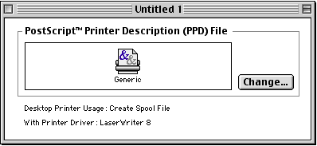
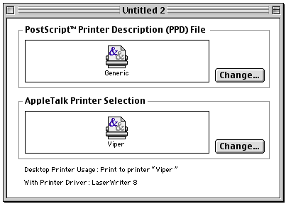
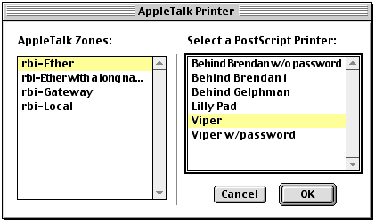
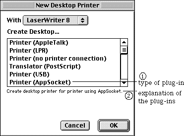
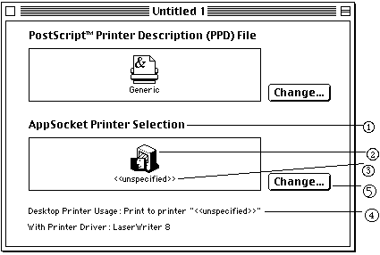
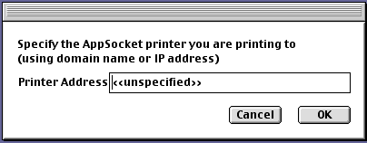
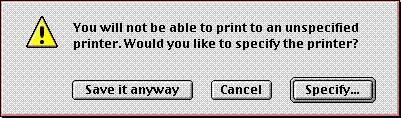
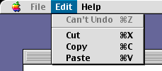

|
|
Apple's Desktop Printer Utility (DTPU) is an application used to create or configure various types of Desktop Printers (DTPs) supported by the LaserWriter 8 printer driver. The built-in DTP types currently provided by DTPU version 1.1 include AppleTalk (PAP) printer, LPR printer, infrared printer, Hold printer, PostScript translator, and Custom application translator.
Third-party plug-in support was added in DTPU version 1.2. This document describes how to write plug-ins for DTPU version 1.2 and later. A DTPU plug-in is a mechanism for programmers to write shared libraries which can be recognized by DTPU and provide means to configure different types of desktop printers that are not built into DTPU. A good use of this is to provide user interface for configuring external hoses for LaserWriter 8. See Technote 1144: Writing Custom Hoses for LaserWriter 8 for information about writing LaserWriter 8 communication hoses.
Updated: [Aug 16 1999]
|
Introduction
A DTPU window has either one or two panes, depending on the type of the desktop printer
it represents. The upper pane, which is common to all types of Desktop Printers,
is used to select the PostScript Printer
Description (PPD) file for the printer. The lower pane, if one exists, is used to configure properties or characteristics specific to that DTP. Examples of this are an AppleTalk address for an AppleTalk DTP (see Figure 2) and a domain name address for an LPR DTP. Printer
Description (PPD) file for the printer. The lower pane, if one exists, is used to configure properties or characteristics specific to that DTP. Examples of this are an AppleTalk address for an AppleTalk DTP (see Figure 2) and a domain name address for an LPR DTP.

Figure 1 - Single pane DTPU window

Figure 2 - Double pane DTPU window for PAP DTP
Developers who need to configure desktop printers with more information than just the basic PPD file configuration may want to consider writing a DTPU plug-in. A DTPU plug-in allows developers to customize the lower pane of their DTP window to a small extent, and to display a dialog window when the lower "Change" button is clicked (or when the lower icon is double-clicked).
Back to top
Limits and Assumptions
When using this plug-in mechanism, the main DTP windows are limited to two panes. The layout and design of the items in the main DTP windows are fixed. The DTPU plug-in has control over the content of the items in the lower pane, but not the positioning of those items. Once the "Change" button is clicked, a plug-in can then present a dialog window with the items necessary to properly configure that type of desktop printer. The example dialog below shows how AppleTalk printers on the network are chosen. Movable dialog windows are strongly recommended for this purpose.

Figure 3 - Dialog Window to configure a PAP DTP.
Back to top
Plug-in Requirements
Please read the related document Technote 1170: The Printing Plug-ins Manager for requirements of writing LaserWriter plug-ins. In order for shared library plug-ins to be recognized by DTPU, they have to be kept in the "Printing Plug-ins" folder within the Extension folder of the active System Folder.
The type in the 'PLGN' resource (ID -8192) for a DTPU plug-in has to be 'dtpu'. The subtype can be any four-character type starting with the character '='. If this subtype represents a custom hose, it should be registered with DTS. Please send the following information to devprogram@apple.com to register your custom hose type:
- Contact Name:
- Company Name:
- Mailing Address:
- Phone Number:
- Email Address:
- Make and Model of device:
- Description of communications method:
- 4-byte type (in the form '=XXX'):
Example: type: 'dtpu'
subtype: '=AS '
Developers attempting to write a DTPU plug-in will need the following files:
- Desktop Printer Utility Version 1.2 or later
- PrintingLib Version 8.6.5 or later
- DtpuPlugIn.h (which is included with the Sample Code accompanying this Technote)
Back to top
Interaction between DTPU and plug-ins
When the "New" menu item is selected in DTPU, the following dialog window is displayed for users to select the type of DTP to create:

Figure 4 - DTP type selection dialog
If DTPU recognizes a plug-in in the "Printing Plug-ins" folder, it adds the plug-in's type (item 1 in Figure 4) to the selection list and provides some explanation (item 2 in Figure 4) in the space below the list when the plug-in type is selected. DTPU asks each plug-in for this informational string.
Once a plug-in DTP type is chosen, DTPU displays a DTP window similar to the one in Figure 5. The content of items 1-4 are controlled by the plug-ins. Again, DTPU obtains the text strings from plug-ins and displays them on behalf of the plug-ins. Item 2 is a 32 pixel x 32 pixel icon. Plug-ins can also provide an icon drawing routine which will be called by DTPU whenever it needs to draw the icon. More information about how a plug-in can control these items is provided in the PlugInDtpInfo Structure and DTP Window Display sections.

Figure 5 - Example of a plug-in DTP window
When the lower change button (item 5 in Figure 5) is clicked, DTPU calls the plug-in to display a configuration dialog window. The window displayed by the included sample code is shown in Figure 6. This window is entirely owned by the plug-in. A plug-in can put any number of items of any type in this window and position the items wherever appropriate. User interaction directed to this dialog window should be handled by the plug-in. DTPU provides a callback routine to handle events that are not related to this dialog window. Plug-ins should use movable modal dialog windows for this purpose whenever possible. More information about how to control this window is given in the Configuration Dialog Window section.

Figure 6 - Movable modal dialog controlled by plug-ins
Back to top
The PlugInDtpInfo Structure
struct PlugInDtpInfo{
OSType dtpID; // four character type ID unique to
// your DTP type
Str255 dtpType; // appear in DTP type selection list
Str255 dtpHelp; // explanation of DTP usage
Str255 dtpConfigTitle; // explanation of DTP configuration
Boolean pluginSpecified; // plug-in data is well specified
// and valid
Boolean canAutoSetup; // this DTP has enough info to
// do PPD auto setup
Boolean autoSetupPossible; // can possibly do PPD
// auto setup
DtpuPlugInDrawIconProc drawIconProc; //optional
DtpuPlugInClipboardOkProc clipboardOkProc;
DtpuPlugInPasteClipboardProc pasteClipboardProc;
DtpuPlugInPlaceInClipboardProc placeInClipboardProc;
DtpuPlugInAddDragDataProc addDragDataProc;
DtpuPlugInDragAcceptableProc dragAcceptableProc;
DtpuPlugInReceiveDragItemProc receiveDragItemProc;
DtpuPlugInAddTagsProc addTagsProc; //optional
DtpuPlugInSavePrefsProc savePrefsProc; //optional
DtpuPlugInSuggestDocNameProc suggestDocNameProc; //optional
DtpuPlugInConfigureProc configureProc;
DtpuPlugInGetIconTitleProc getIconTitleProc;
DtpuPlugInGetUsageTextProc getUsageTextProc;
DtpuPlugInCloseProc closeProc;
void *refcon; // your private pointer that will
// be passed back each time
};
typedef struct PlugInDtpInfo PlugInDtpInfo;
typedef PlugInDtpInfo *PlugInDtpInfoPtr;
typedef PlugInDtpInfo **PlugInDtpInfoHdl;
|
PlugInDtpInfo is used by DTPU to retrieve information from plug-ins. The fields in this data structure are:
dtpID - should be the same four-character ID used for subtype in 'PLGN' resource (ID -8192)dtpType - will be displayed as item 1 in Figure 4 (DTP type selection dialog)dtpHelp - will be displayed as item 2 in Figure 4 (DTP type selection dialog)dtpConfigTitle - will be displayed as item 1 in Figure 5 (plug-in DTP window)pluginSpecified - should be TRUE if the default plug-in settings for a newly created "Untitled" DTP are complete and can fully satisfy the print-time needs, FALSE otherwise. If this field contains FALSE and a user tries to save the DTP, the alert box shown in Figure 7 will be presented.

Figure 7 - Unspecified Printer warning
Plug-ins should set the pluginSpecified field to FALSE if this alert is wanted before saving a DTP. By setting pluginSpecified to TRUE for a newly created DTP, the alert can be avoided. For existing DTPs, this field should always be set to TRUE.
canAutoSetup - TRUE if this particular DTP has enough information to do a PPD auto setup (for example, a PAP DTP has a valid AppleTalk address for a LaserWriter).autoSetupPossible - TRUE if this plug-in type can possibly do a PPD auto setup. For example, this field would be TRUE for a PAP DTP but FALSE for an LPR DTP because its lack of duplex communication protocol.refcon - can be used by plug-ins in any way they please. It is normally used as a pointer to any memory allocated by a plug-in.- The rest of the fields in this data structure are
ProcPtrs pointing to routines in the plug-in. DTPU calls these routines when it needs some information from a plug-in or when it needs a plug-in to perform certain tasks. These routines are described below.
Back to top
Plug-in Interface
The Plug-in interface is in C. Although DTPU is written in C++ using PowerPlant, plug-ins do not have to use C++ or PowerPlant. All routines provided by plug-ins should return a result of type OSStatus. noErr should be used as an indication of success. Shared library initialization and termination routines can be used for initialization and clean-up. It is important to restore the current resource file before exiting any plug-in routine if the current resource file is ever changed.
Plug-ins must provide the following routines and point each of their corresponding ProcPtrs in PlugInDtpInfo to them. For those marked optional, the ProcPtrs should be set to NULL if the plug-in chooses not to support them.
Open and Close
DtpuPluginOpen
All DTPU plug-ins must export a routine named DtpuPluginOpen. This is the first routine called by DTPU after shared library initialization.
OSStatus DtpuPluginOpen(PlugInDtpInfo *plugInDtpInfoP, void* inRefCon,
Collection inCollection);
|
plugInDtpInfoP points to a PlugInDtpInfo structure whose contents should be filled in by this routine. DTPU uses the information returned in this data structure to display a DTP window and interact with the plug-in. The data fields dtpID, dtpType, dtpHelp, dtpConfigTitle, pluginSpecified, and refcon have already been explained in the previous section. The ProcPtrs are pointers to routines provided by a plug-in. When DtpuPluginOpen is called, a plug-in should fill out all ProcPtrs and point them to the routines handling the requests. These routines are described below with their corresponding ProcPtrs in PlugInDtpInfo. ProcPtrs for optional routines which are not supported by a specific plug-in should be set to NULL.
inRefCon should be ignored if it is NULL. Otherwise, inRefCon would be the value returned by a previous call to DtpuPluginOpen. In this case, it should be used to initialize the newly created plug-in DTP. Internal information contained in inRefCon should be copied over to the new refcon or data structure allocated for the new plug-in DTP.
inCollection should be ignored if it is NULL. Otherwise, it is a Collection for an existing DTP. Internal information needed by plug-ins to initialize a newly created plug-in DTP can be extracted from this Collection by using GetCollectionItem. This information would be the same as that saved by the routine pointed to by savePrefsProc, which is described later. See Inside Macintosh: QuickDraw GX Environment and Utilities for more information on the Collection Manager.
If inRefCon is non-zero, it should be used to initialized the new DTP, and inCollection should be ignored. If inRefCon is zero and inCollection is non-zero, inCollection should be used to initialize the new DTP. If they are both zero, the new DTP should be initialized with reasonable default values.
Note:
Multiple instances of the same plug-in must be able to coexist at the same time, since there may be multiple DTPs with the same plug-in type. This means the calling sequence does NOT necessary follow an open -> close -> open -> close order. Your plug-in's DtpuPluginOpen function might be called again before its closeProc function is ever called.
Unless otherwise stated, the refcon parameter in the following routines is the same as the refcon in the PlugInDtpInfo returned by a previous call to your DtpuPluginOpen function.
closeProc
OSStatus closeProc(void *refcon);
|
The field closeProc in data structure PlugInDtpInfo should be set to the address of the plug-in's closeProc routine.
DTPU calls this routine to give a plug-in a chance to release any system resources allocated in the DtpuPluginOpen call.
DTP Window Display
To display the lower pane of the DTPU window on behalf of plug-ins, DTPU must call the following three routines:
getIconTitle
closeProc
OSStatus getIconTitle(Str255 outIconTitle, void *refcon);
|
The field getIconTitleProc in data structure PlugInDtpInfo should be set to the address of the plug-in's getIconTitle routine.
The plug-in should set the content of outIconTitle to the string to display as the printer icon title (typically the printer name or network address) in item 3, Figure 5.
getUsageText
OSStatus getUsageText(Str255 outUsageText, void *refcon);
|
The field getUsageTextProc in data structure PlugInDtpInfo should be set to the address of the plug-in's getUsageText routine.
The plug-in should set the content of outUsageText to the informative text to display, as shown in item 4, Figure 5.
drawIcon
OSStatus drawIcon(Rect* inFrameP, Boolean inHilite, void* inRefCon);
|
The field drawIconProc in data structure PlugInDtpInfo should be set to the address of the plug-in's drawIcon routine or to NULL if it's not supported.
This is the plug-in's optional routine to draw an icon representing the printer or its setting. Plug-ins that don't want to draw their own icons should set this field to NULL, in which case a generic LaserWriter icon is displayed.
The icon is positioned as item 2 in Figure 5. Plug-ins can use Mac Toolbox routines such as PlotIconID or PlotIconSuite to draw this icon. The GrafPort is already set properly when this routine is called. Any change made to the GrafPort's drawing state by this routine should be restored on exit.
inFrameP is a pointer to a Rect which contains the position (in local coordinates) of the icon to be drawn.
inHilite indicates whether the icon should be drawn as hilited or normal.
Copy&Paste + Drag&Drop
DTPU supports Copy & Paste and Drag & Drop between DTP documents. One can copy or drag the lower pane icon (item 2 in Figure 5) and paste or drop it into another DTP window provided the two DTP windows have compatible data types. This allows a user to copy the configuration information from one DTP to another, which can simplify the configuration process. Because DTPU does not know the meaning of a plug-in's internal data, plug-ins have to provide the following six routines to help DTPU determine if the data can be used.
clipboardOk
OSStatus clipboardOk(Boolean* outAceptableP, void *refcon);
|
The field clipboardOkProc in data structure PlugInDtpInfo should be set to the address of the plug-in's clipboardOk routine.
DTPU calls this routine to decide if the content in the clipboard is acceptable to a plug-in's DTP. Plug-ins should use GetScrap() to determine if the data on the clipboard is sufficient to setup its part of the DTP completely. *outAceptableP should be set to TRUE if the clipboard contains the needed data and FALSE otherwise (if not all needed information is present).
pasteClipboard
OSStatus pasteClipboard(void *refcon);
|
The field pasteClipboardProc in data structure PlugInDtpInfo should be set to the address of the plug-in's pasteClipboard routine.
DTPU calls this routine to paste the clipboard into a plug-in's internal DTP data. The plug-in should use GetScrap() to extract the type of data it needs and update its internal information. Any fields in PlugInDtpInfo that are affected by this operation should be updated to reflect these changes.
placeInClipboard
OSStatus placeInClipboard(void *refcon);
|
The field placeInClipboardProc in data structure PlugInDtpInfo should be set to the address of the plug-in's placeInClipboard routine.
DTPU calls this routine to place a plug-in's internal data in the clipboard. The plug-in should use PutScrap() to export its internal data of one or more types.
addDragData
OSStatus addDragData(DragReference inDragRef,
ItemReference inItemRef, void *refcon);
|
The field addDragDataProc in data structure PlugInDtpInfo should be set to the address of the plug-in's addDragData routine.
DTPU calls this routine when the plug-in's icon is being dragged. The plug-in should use AddDragItemFlavor() to export its internal data in one or more types. See Inside Macintosh: Drag Manager for descriptions inDragRef and inItemRef.
dragAcceptable
OSStatus dragAcceptable(DragReference inDragRef,
ItemReference inItemRef,
Boolean* acceptableP, void *refcon);
|
The field dragAcceptableProc in data structure PlugInDtpInfo should be set to the address of the plug-in's dragAcceptable routine.
DTPU calls this routine to decide if the content of a drag is acceptable to a plug-in's DTP. Plug-ins should use GetFlavorFlags() to decide if a drag has the type or types of data needed. See Inside Macintosh: Drag Manager for inDragRef and inItemRef.
receiveDragItem
OSStatus receiveDragItem(DragReference inDragRef,
DragAttributes inDragAttrs,
ItemReference inItemRef, void *refcon);
|
The field receiveDragItemProc in data structure PlugInDtpInfo should be set to the address of the plug-in's receiveDragItem routine.
DTPU calls this routine to drop data onto plug-in's DTP. Plug-ins should use GetFlavorDataSize() and GetFlavorData() to extract the data. See Inside Macintosh: Drag Manager for inDragRef, inDragAttrs, and inItemRef.
DTP Saving
Whenever DTPU needs to save a DTP which has a custom plug-in type, it needs assistance from the following three routines provided by plug-ins:
addTags
OSStatus addTags(Collection outTagCollection,
CollectionTag inTag, void *refcon);
|
The field addTagsProc in data structure PlugInDtpInfo should be set to the address of the plug-in's addTags routine or to NULL if not supported.
DTPU calls addTags before making an extended 'PAPA'. This gives plug-ins a chance to save information needed at printing time. Plug-ins need to add this data to the Collection outTagCollection. On exit, DTPU will take the Collection and save its data into the DTP's 'PAPA'. Plug-ins that don't need this functionality don't have to support this routine.
For example, the domain name address required by an LPR hose at print time can be saved in extended 'PAPA' with this routine. See Technote 1115: The Extended PAPA for additional information. This routine should make a call similar to this one:
err = AddCollectionItem(outTagCollection, inTag,
myPluginDataType, myPluginDataSize, (void *)myPluginDataPtr);
|
outTagCollection is the resulting Collection that will be used to make the extended 'PAPA'. inTag is always 'PAPA'. myPluginDataType should be a 4-character id identifying the plug-in data being added into the Collection. myPluginDataSize and myPluginDataPtr are the size and pointer to a plug-in's private data for the DTP. As an example of this, an LPR DTP could use 'TCP ' for myPluginDataType, the length of the domain name for myPluginDataSize and a pointer to the domain name for myPluginDataPtr.
savePrefs
OSStatus savePrefs(Collection outTagCollection, void *refcon);
|
The field savePrefsProc in data structure PlugInDtpInfo should be set to the address of the plug-in's savePrefs routine or to NULL if not supported.
DTPU calls savePrefs() before saving a plug-in DTP. It gives plug-ins a chance to save any private data they might need to reopen an existing DTP. Plug-ins need to add their private data to outTagCollection. On exit, DTPU saves the content of the Collection.
suggestDocName
OSStatus suggestDocName(Str255 outDocName, void *refcon);
|
The field suggestDocNameProc in data structure PlugInDtpInfo should be set to the address of the plug-in's suggestDocName routine or to NULL if not supported. If this field is NULL, DTPU will use the name returned by getIconTitle as the default DTP name in a save or save as dialog window.
DTPU calls suggestDocName before saving an untitled plug-in DTP. It gives plug-ins a chance to suggest a name for the DTP. Plug-ins can use an appropriate default name and put it in outDocName. For example, an LPR DTP might suggest the printer's domain name address for the DTP name.
Configuration Dialog Window
configure
OSStatus configure(PlugInDialogCallbackProc callbackProc,
MenuHandle editMenuH, short cutMenuItem,
short copyMenuItem, short pasteMenuItem,
void *refcon);
|
The field configureProc in data structure PlugInDtpInfo should be set to the address of the plug-in's configure routine.
DTPU calls configure whenever the lower "Change..." button (item 5, Figure 5) is clicked or the lower icon (item 2, Figure 5) is double-clicked. In response to this user interaction, a plug-in should display a movable modal dialog window such as the one shown in Figure 6. The content of the dialog is decided by the plug-in.
A plug-in's configure routine should call WaitNextEvent() and handle all events directed to this movable modal dialog window. In particular, the routine should handle mouse clicks in the content region, mouse clicks in the title bar of the dialog window, window dragging of this dialog, and any update events for the dialog. keyDown or autoKey events when the command key is not pressed should be handled by this routine as well. Events not related to the dialog window and not handled by the plug-in's configure routine should be passed up to DTPU by calling callbackProc. callbackProc is of type PlugInDialogCallbackProc which is defined as:
typedef void (*PlugInDialogCallbackProc)(EventRecord* macEventP);
|
DTPU handles command key-down events, and events not specifically for the plug-in's window.
Upon entering this routine, the Edit menu is disabled. Plug-ins should enable/disable the Cut, Copy, and Paste menu items as desired if the dialog has editable text items. Plug-ins should keep this menu updated for the duration of the execution of this configure routine. The command key-down events for Edit, however, are handled by DTPU through the callback. The MenuHandle of Edit is passed in as editMenuH and the menu items are in cutMenuItem, copyMenuItem, and pasteMenuItem. Plug-ins should use EnableItem() and DrawMenuBar() to update the Edit menu (see Figure 8).

Figure 8 - Edit menu enabled by plug-in
Plug-ins should not return control back to DTPU until the user either confirms or cancels the settings in the dialog window. A value of "0" for user confirmation or a value "1" for user cancellation should be returned as a result of this routine. Any other value causes an error.
Back to top
Summary
This Technote explains how to add a plug-in (or plug-ins) to the system that will be used by Desktop Printer Utility. These plug-ins can configure desktop printers that use third-party custom hoses as described in Technote 1144: Writing Custom Hoses for LaserWriter 8. With the information contained in this Technote and the sample code which accompanies it, you should be able to extend Desktop Printer Utility and Desktop Printing in general.
References
Technote 1170: The Printing Plug-ins Manager
Technote 1144: Writing Custom Hoses for LaserWriter 8
Technote 1129: The Settings Library
Technote 1115: The Extended 'PAPA' Resource
Technote 1113: Customizing the Desktop Printer Utility
Inside Macintosh: Drag Manager
Inside Macintosh: QuickDraw GX Environment and Utilities
Change History
|
01-December-1998
|
First released.
|
|
01-June-1999
|
Updated and converted to Technote format.
|
Back to top
Downloadables
|

|
Acrobat version of this Note (500K).
|
Download
|
|

|
Binhexed Sample Code (196K).
|
Download
|
Back to top
|